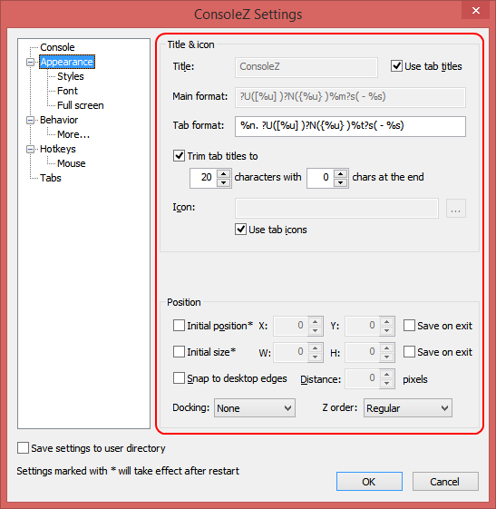

Title
Specifies initial Console title.
Use tab titles
If checked, main window title will be set to active tab's title.
Use console window title
Activates support for changing window/tab title from the shell ('title'
command in cmd.exe).
Note: If on, 'Rename Tab' menu command will not work properly.
Show command
If checked, main window title will show currently running command.
Show command in tabs
If checked, tab titles will show currently running commands.
Trim tab titles
If checked, tab titles will be trimmed to specified number of characters.
Icon
Specifies custom icon for the main window. If left empty, default Console icon will be used.
Use tab icons
If checked, main window icon will be set to active tab's icon.
Name
Specifies Console font name.
Size
Specifies font size.
Bold
If checked, Console font will be bold.
Italic
If checked, Console font will be italic.
Custom color
Allows you to specify custom font color.
Note: If on, all text will be shown in the selected color.
Shell's syntax coloring will be ignored.
Position window
When checked, allows you to specify initial window position. Otherwise, initial Console window position will be determined by Windows.
X, Y
These values specify initial Console window position.
Save on exit
If checked, Console's window position will be saved on exit.
Snap to desktop edges
When checked, Console window will be snapped to desktop edges.
Snap distance
Specifies window snap disance.
None
Top left
Top right
Bottom left
Bottom right
Allows you to specify initial window docking type.
Regular
Always on top
Always on bottom
Pinned to desktop
Allows you to specify window Z order.
Note: Pinned to desktop currently works only in Windows
Explorer (i.e. other shells like Litestep are not supported)